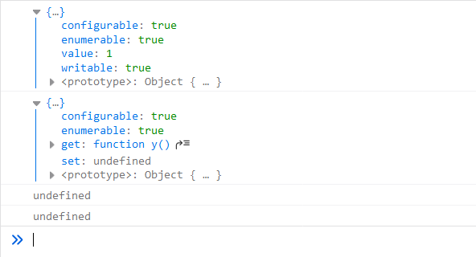
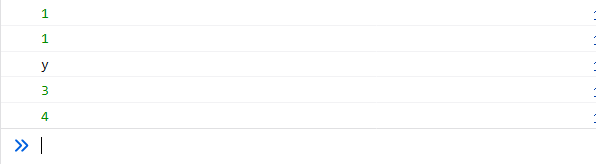
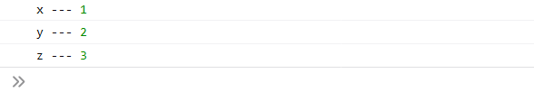
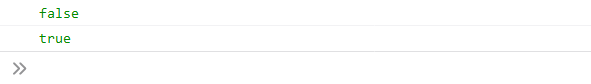
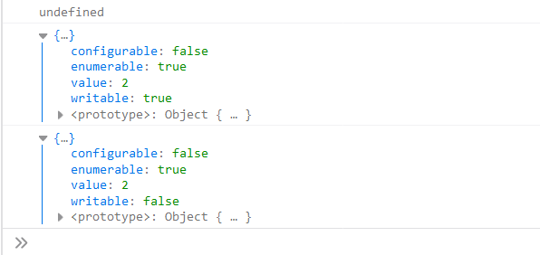
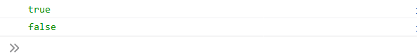
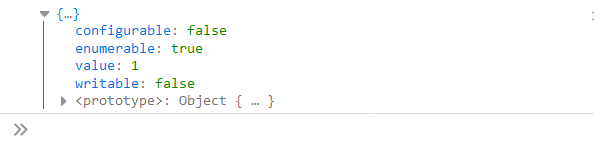
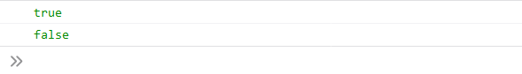

再次花时间回顾一下基础，毕竟要想楼建的好，地基就要牢固，嘻嘻！
体验账号2：账号：“123123”。密码：“123123”
- 对象属性的四个特性
- 对象的可扩展性
- 删除属性
- 检测属性
- 枚举属性
- 属性的getter和setter
数据属性就是我们平常看到的对象普通属性。数据属性的特性为以下四种：
值（value）
可写性（writable）
可枚举性（enumerable）
可配置性（configurable）存储器属性是由getter和setter定义的属性存储器属性特性为以下四种：
读取（get）
写入（set）
可枚举性（enumerable）
可配置性（configurable）Object.getOwnPropertyDescriptor() const log = console.log;
//返回数据数据的描述
let aa = {
x: 1
};
log(Object.getOwnPropertyDescriptor(aa, 'x'))
//返回存储器属性的描述
let bb = {
get y() {
return 2;
},
}
log(Object.getOwnPropertyDescriptor(bb, 'y'))
//对于一个不存在的属性或者继承属性返回undefined
log(Object.getOwnPropertyDescriptor({}, 'x'))
log(Object.getOwnPropertyDescriptor({}, 'toString'))
Object.defineProperty()说明:
const log = console.log;
var aa = {
y: 22
};
//添加一个x属性为不可写、不可枚举、可配置
Object.defineProperty(aa, 'x', {
value: 1,
writable: false,
enumerable: false,
configurable: true
})
log(aa.x);
aa.x = 2; //尝试修改这个属性会失败，但是不会报错，在严格模式下会报错
log(aa.x)
for (let i in aa) {
//不可枚举数据属性x，但是y可以枚举
console.log(i)
}
//因为这个x属性依然是可以配置的，所以可以通过配置的方式对值进行修改
Object.defineProperty(aa, 'x', {
value: 3,
})
log(aa.x);
//将数据属性设置为存储器属性
Object.defineProperty(aa, 'x', {
get: function() {
return 4;
},
})
log(aa.x)
Object.defineProperties() const log = console.log;
var aa = {};
Object.defineProperties(aa, {
x: {value: 1,writable: false,enumerable: true,configurable: false},
y: {value: 2,writable: false,enumerable: true,configurable: false},
z: {
get:function(){
return 3
},
enumerable: false,
configurable: false
}
})
for(let i in aa){
log(i,'---',aa[i])
}
log('z','---',aa.z)
对象可扩展性是指是否可以给该对象添加新的属性Object.preventExtensions()说明：
const log = console.log;
var aa = {};
Object.preventExtensions(aa);
aa.x = 1;
log(aa.x)Object.isExtensible() //在《javascript权威指南》第六版中6.8.3节介绍可扩展性的时候，将isExtensible写为esExtensible了。
const log = console.log;
var aa = {};
var bb = {};
Object.preventExtensions(aa);
log(Object.isExtensible(aa))
log(Object.isExtensible(bb))
Object.seal()说明：
const log = console.log;
var aa = {
y: 2
};
Object.seal(aa);
aa.x = 1;
log(aa.x);
log(Object.getOwnPropertyDescriptor(aa, 'y'))
Object.defineProperty(aa, 'y', {
writable: false,
})
log(Object.getOwnPropertyDescriptor(aa, 'y'))
Object.isSealed() const log = console.log;
var aa = {};
var bb = {};
Object.seal(aa);
log(Object.isSealed(aa));
log(Object.isSealed(bb))
Object.freeze()说明：
const log = console.log;
var aa = {
x: 1
};
Object.freeze(aa);
log(Object.getOwnPropertyDescriptor(aa, 'x'))
Object.isFreeze() const log = console.log;
var aa = {};
var bb = {};
Object.freeze(aa);
log(Object.isFrozen(aa));
log(Object.isFrozen(bb));